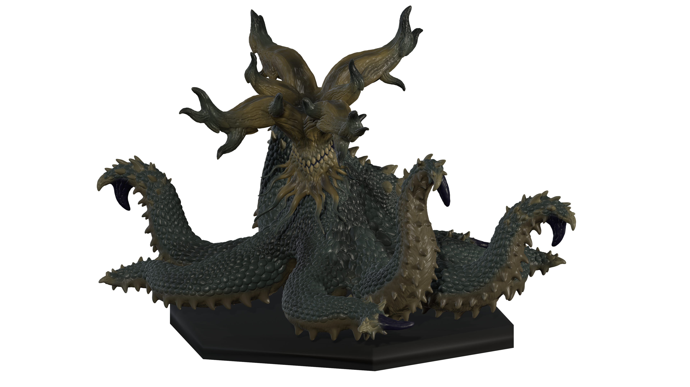

ー STANDARD MODEL Cとは ー
手軽なサイズ感を担保し、ハイクオリティな造形表現を目指したフィギュアモデルです。
比較的コレクションもしやすく、全て全身造形されたもので構成されています。
比較的手に取るのにおすすめのフィギュアシリーズです。
ー Vol.02 陸に生きた頭足類 ー

本来、”水生生物として生きる彼らがもし陸上での活動に適応したらどうなるのか”をコンセプトに製作しました。
蛸（頭足類）特有の触腕の表現には、特に力を入れました。
また、外見は蛸の知能の高さや生物としての未知性を感じられるようなものに仕上げています。
・製作年月：２０２６.０７
・販売価格：１０００円
準備中
ー Vol.01 出立つ猛禽竜 ー

猛禽類を爬虫類とのハイブリッド生物として新たにデザインしました。
竜という架空性がありながらも、外見や体色を含め、既存の鷲やトカゲを思わせるものとなっています。
視力が完全に退化しつつも、その土地に根付く強靭な生物として猛禽竜を新たな生物として描いています。
・製作年月：２０２６.０３
・販売価格：１０００円
準備中
Topへ